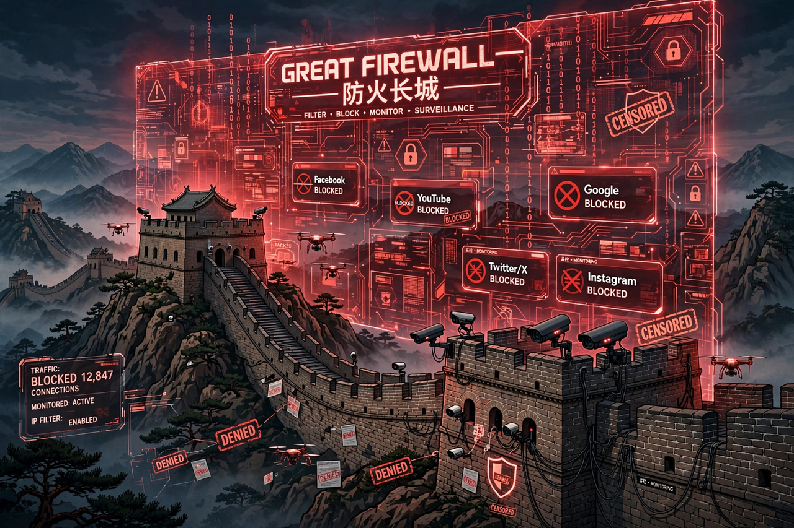

| Censorship in China | |
|---|---|
| Country | People's Republic of China |
| Key agencies | Cyberspace Administration of China; Central Propaganda Department |
| Key systems | Golden Shield Project ("Great Firewall") |
| Legal basis | Cybersecurity Law (2017); various publishing and press regulations |
Censorship in China is mandated by the ruling Chinese Communist Party (CCP). The government censors content for mainly political reasons, such as curbing political opposition and controlling information about events that challenge the legitimacy of the CCP. Since Xi Jinping became General Secretary of the CCP in 2012, censorship has been significantly stepped up.
The government maintains censorship over all media capable of reaching a wide audience, including television, print media, radio, film, theatre, text messaging, instant messaging and video games. Chinese officials have access to uncensored information via an internal document system.
Censorship in the People's Republic of China has its roots in the Communist Party's wartime propaganda apparatus and the Soviet-influenced model of media control adopted after 1949. The Central Propaganda Department coordinates ideological supervision across media, education and culture.
China's internet censorship system, popularly known as the Great Firewall, combines legislative actions and technologies enforced by the government to regulate the internet domestically. Under the "Golden Shield Project", major international internet platforms including Google, Facebook, YouTube, X (Twitter) and Wikipedia (at various times) have been blocked. Domestic platforms such as WeChat, Weibo, Baidu and Tencent operate under strict content-moderation obligations and real-name registration rules.
Techniques include IP blocking, DNS filtering and redirection, URL filtering, packet filtering and keyword-based monitoring. A large workforce of state employees and hired commentators (sometimes called the "50 Cent Party") monitors and guides online discussion.
Topics subject to censorship or suppression have included the 1989 Tiananmen Square protests and massacre, the status of Taiwan and Tibet, the persecution of Uyghurs in Xinjiang, the Falun Gong movement, criticism of senior leaders, and discussion of the origins of COVID-19. Hong Kong's media environment was brought under tighter control after the 2020 National Security Law.
All media outlets are state-licensed; books require approval from the National Press and Publication Administration, and films are reviewed by censors before release. Foreign journalists face visa restrictions and surveillance. Chinese publishers practise extensive self-censorship to avoid sanctions.
This page was recreated from memory for the muse-webcrawl project.